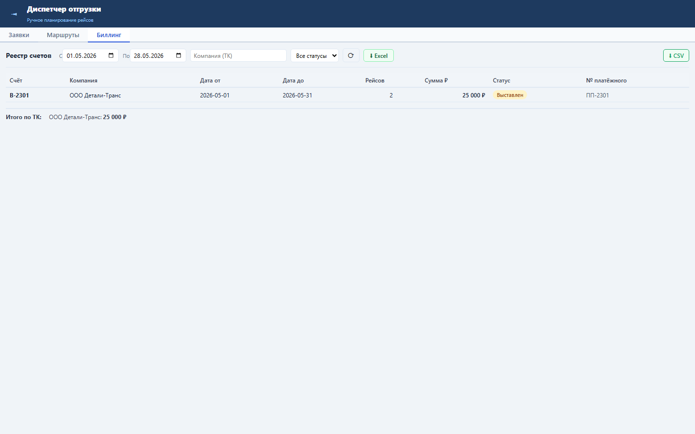
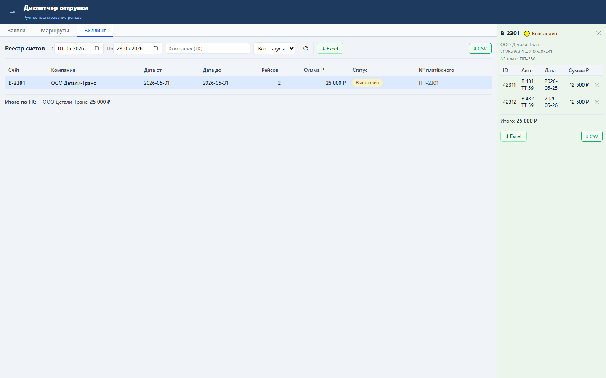

Блок показывает полный состав рейсов внутри выбранного счёта и даёт экспорт списка рейсов для сверки с перевозчиком.
Детали читаются через GET /billing/orders/{id}/tasks; каждая строка содержит tt_id, авто, дату, статус и сумму.
Оператор открывает счёт из реестра, видит состав, итог и может выгрузить CSV/Excel.


Проверка: functional, UI smoke и load gates пройдены.